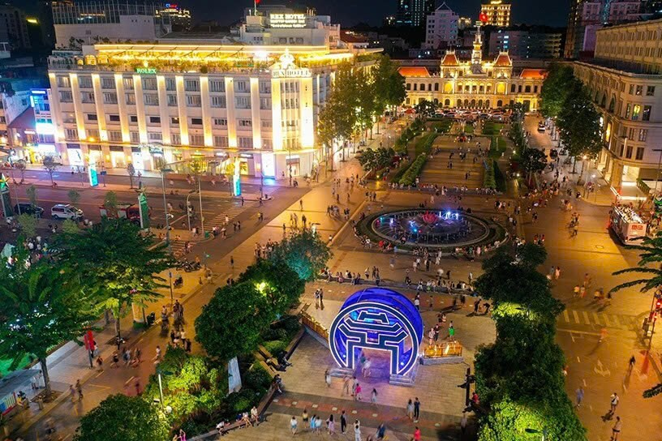

A taste carried from home
The story begins with familiar Vietnamese flavours, memories of Saigon streets and the wish to share them in Gozo.
An elegant, open boulevard where the journey begins with the story behind Sài Gòn Café.
B
The visual dissolves from monochrome into colour, reflecting how old Saigon memories become a contemporary café experience.